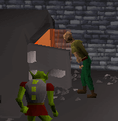
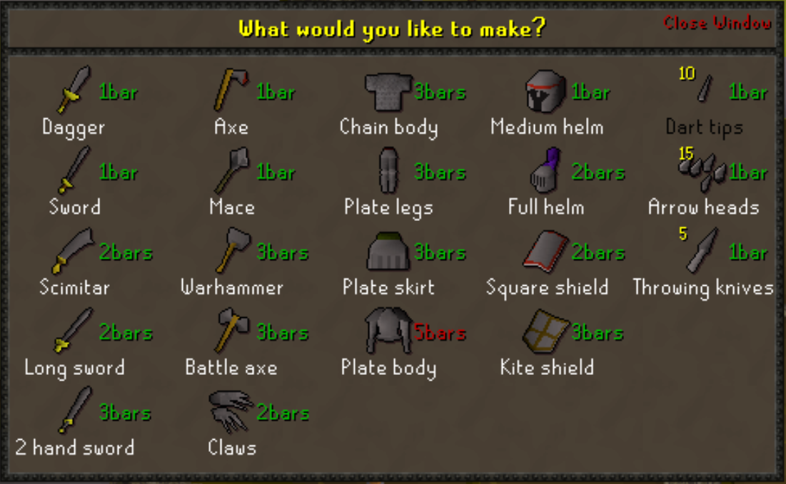
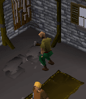

Smithing Skill Guide
|
The smithing skill is used to convert ores, obtained by mining, into weapons and armour. Many players find that making equipment and selling it to shops and other players is a good way to make money.
Smithing has two stages: smelting and smithing. Smelting converts your ores into bars. This is done at furnaces. To convert your ore into bars select an ore in your inventory then left click on a furnace. If you want to smelt several lots of ore at once, left clicking on the furnace will bring up a list of metals. Right click on a metal to select the quantity you want to make. |
 |
Ores / smithing levels chart
You will need different combinations of ores and different smithing levels to make each bar. Some of these requirements are shown below. There are even more bars to make at higher levels.| Bar | Ores required per bar |
Level |
|---|---|---|
|
Bronze |
1 Tin ore, 1 Copper ore |
1 |
|
Iron |
1 Iron ore (50% chance of success) |
15 |
|
Silver |
1 Silver ore |
20 |
|
Steel |
2 Coal, 1 Iron ore |
30 |
|
Gold |
1 Gold ore |
40 |
|
Mithril |
4 Coal, 1 Mithril ore |
50 |
|
Adamant |
6 Coal, 1 Adamantite ore |
70 |
|
Runite |
8 Coal, 1 Runite ore |
85 |
Forging items
You will need a hammer which can be bought from any general store.To convert your bars into armour and weapons you must forge them at an anvil.
Select a bar from your inventory, then select an anvil. You will be given a screen to decide what sort of equipment you would like to make. You will be shown how many bars are needed to make types of object. If this is written in green then you have enough bars to make the item, if it is written in red then you do not.

The name of the objects will be written in black or white. If the name is written in white then you have the smithing level required to make it. If it is written in black then you do not.
Select what you would like to make and provided you have the required smithing levels and number of bars, your object will be made.
|
 |
The smithing levels required to forge a metal type are the same as those required to smelt it.
However at the levels given you will only be able to forge the most basic items in that metal (mostly daggers). A few levels past these base smithing levels you will be able to make a wider variety of things. For example at smithing level 4 you will be able to make bronze short swords.
The gold and silver bars are not used to smith weapons instead they are used in the crafting skill. |
The following is a table showing at what level you can forge various items.
| Item | Level Requirement to Smith | |||||
|---|---|---|---|---|---|---|
| Bron | Iron | Steel | Mith | Adam | Rune | |
| Dagger | 1 |
15 |
30 |
50 |
70 |
85 |
| Axe | 1 |
16 |
31 |
51 |
71 |
86 |
| Mace | 2 |
17 |
32 |
52 |
72 |
87 |
| Medium helm | 3 |
18 |
33 |
53 |
73 |
88 |
| Short sword | 4 |
19 |
34 |
54 |
74 |
89 |
| Nails | - | - | 34 |
- | - | - |
| Throwing dart tips (After completing Tourist Trap) |
4 |
19 |
34 |
54 |
74 |
89 |
| Wire | 4 |
- | - | - | - | - |
| Cannonball | - | - | 35 |
- | - | - |
| Arrowheads | 5 |
20 |
35 |
55 |
75 |
90 |
| Scimitar | 5 |
20 |
35 |
55 |
75 |
90 |
| Longsword | 6 |
21 |
36 |
56 |
76 |
91 |
| Item | Level Requirement to Smith | |||||
| Bron | Iron | Steel | Mith | Adam | Rune | |
| Studs | - | - | 36 |
- | - | - |
| Full helm | 7 |
22 |
37 |
57 |
77 |
92 |
| Throwing knives |
7 |
22 |
37 |
57 |
77 |
92 |
| Square shield | 8 |
23 |
38 |
58 |
78 |
93 |
| Warhammer | 9 |
24 |
39 |
59 |
79 |
94 |
| Battle axe | 10 |
25 |
40 |
60 |
80 |
95 |
| Chainbody | 11 |
26 |
41 |
61 |
81 |
96 |
| Kiteshield | 12 |
27 |
42 |
62 |
82 |
97 |
| Claws (After completing Death Plateau) |
13 |
28 |
43 |
63 |
83 |
98 |
| Two-handed sword | 14 |
29 |
44 |
64 |
84 |
99 |
| Platelegs | 16 |
31 |
46 |
66 |
86 |
99 |
| Plateskirt | 16 |
31 |
46 |
66 |
86 |
99 |
| Platebody | 18 |
33 |
48 |
68 |
88 |
99 |